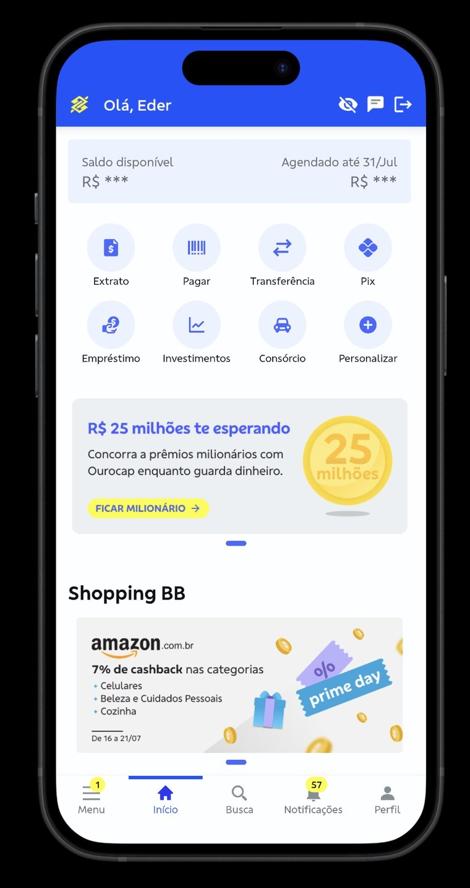
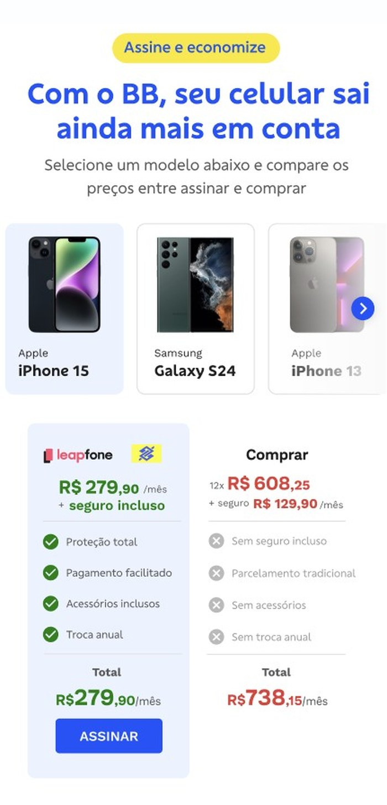
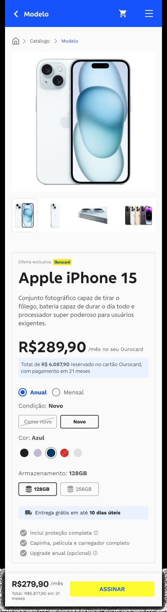

Project 02 · Banking app
Banco do Brasil: Smartphone Subscription in the BB App
How to bring a 21-month rental contract into a bank’s app, moving the rules people will live with to before they sign, not after.
Status: the BB channel MVP is live, with subscribers and measured results. The experience inside the BB app, designed in this project, has not launched yet and is being validated with the bank.
Section
Context
A long contract product, in a channel that already knows the customer.
Leapfone offers smartphones on a rental subscription: the customer pays a monthly fee, the device stays with the company and theft and damage protection is included. On the website, price and payment method are the most cited reasons for giving up in the abandoned-cart survey.
The partnership with Banco do Brasil started as a pilot in December 2023 and became a contract in 2025. Every month, the bank tracks two metrics: new subscriptions per cohort and the volume paid on Ourocard credit cards.
Inside the BB app, the starting point changes: the customer is already authenticated, the data already exists and the card already belongs to the customer’s own tax ID. The project designs the complete experience inside the app, from the storefront to the end of the contract, around that advantage.
- 1 in 5of B2C subscribers pay with a Banco do Brasil card (19.7%)
- 21months of contract in the BB channel, with upgrades from month 12
- 22clauses in the rental contract create an obligation, deadline or right
- 14 + 5screens and states in the navigable prototype

Section
What existed vs. what I designed
An MVP I designed that is live, and the experience inside the app.
Before my work
Running since December 2023, with the official partnership contract since January 2025.
The existing journey that the BB channel could reuse or replace.
BB channel MVP · live
With BB’s business management and product team, and the startup’s product team, leadership and marketing management.
Done with a credit analysis partner: +16% conversion.
A flow for refurbished models: +41% subscriptions.
Experience inside the BB app · in validation
Designed by me, and the starting point of this project.
14 stages in four phases, from the storefront to the end of the contract.
14 screens and 5 states, built on BB’s brand guidelines for partnerships.
Each rule shows up at the moment it matters.
Journey mapped with marketing management and the product manager; dependencies validated with business, product, marketing and sales.
Timeline
First customers in the channel.
The partnership becomes a contract.
MVP and the in-app experience, about 12 months of design.
The findings that shaped the decisions below.
Waiting for the bank’s approvals.
Worked with
Leapfone is the smartphone subscription brand of an insurance startup. The in-app experience has not launched, so the measured results above belong to the MVP, not to this experience.
Section
Problem
Three friction points the channel had to solve.
For the customer
They want a new phone for a monthly fee that fits their budget, but only discover the contract rules after signing.
For the business
For BB, every subscription is recurring volume on Ourocard. For Leapfone, every lost order costs acquisition, analysis and support.
Friction points
On the website, 51,506 of 59,380 orders created in 12 months ended without payment. The mapping does not break this down by cause.
Term, cancellation fee, deductible and end of contract do not appear in any email, screen or message before or after signing.
Credit refusals per year on the website, with practically the same message, even when the system already schedules a new analysis in 3 months.
Source: Leapfone B2C journey mapping (website, 12 months), covering the order funnel, terms of use, contracts and CRM. These are website numbers, not BB channel numbers.
Section
What the analysis showed
The evidence changed where the BB app actually helps.
In the abandoned-cart survey (957 responses, 2024–2026), “I would like to pay another way” is the main reason for giving up, at 18%, followed by “it was too expensive”, at 15%. Of the roughly 35 responses that mention BB or Ourocard, 12 talk about the card limit, which the plan used to take up at the start of the pilot.
“o plano da ourocard utiliza o limite de credito” (the Ourocard plan uses up the credit limit)
The product stopped taking up the card limit. The design turns that change into an argument: it shows up in the banner, the benefits, the comparison and the payment step.
Some BB respondents gave up because they did not have the bank’s credit card. The Ourocard rule now appears before the error, in a dedicated state.
14 of 22 clauses had no communication, and in the roadmap alignment meeting marketing described the end of contract of BB’s first cohorts as the biggest friction point: some customers did not know they had to return the device. The rules now enter the flow before acceptance and come back in the logged-in area in the month they matter.
The system has two different doors, refusal and a waitlist with a new analysis in 3 months, and the customer receives almost the same message. “Not yet” now gets a date, a reminder and an alternative path.
“não tenho cartão do bb” (I don’t have a BB card)
The survey is self-reported and answered by people who gave up. The BB cuts come from a small base and work as a qualitative signal, not as statistics. Sources: B2C journey mapping, Leapfone abandoned-cart survey and the roadmap alignment meeting of 09/09/2026.
Section
Design principle
No rule discovered after the click.
The goal was not only to shorten the signup. It was to make the shortest path also the clearest one, because in a 21-month contract frustration shows up at the end.
Requirements and rules appear before the customer fills in or pays anything.
Each clause comes back on the screen of the month it changes something.
No “no” without saying what to do now.
Section
Decision 01
Decision 01
Sell what fits the monthly budget and what is already included
Problem
The first version of the home, which I designed myself, promised “pay less” and “it’s even cheaper”, comparing the monthly fee with an installment purchase plus insurance. The two sides used different bases for price, term and coverage.
Alternatives
As in my initial wireframe and the MVP: a strong argument, but with different bases on each side.
Card limit, protection, accessories, upgrades and who owns the device.
Decision
I proposed B. The home opens with the monthly fee and price bands, and the comparison with the installment purchase makes no promise in reais.
Why
Price and payment method are the most cited reasons for giving up in the survey, and among BB customers the card limit comes up repeatedly. Those are points the subscription really solves.
Trade-off: we lose a headline number for the banner. We gain a comparison in which every line can be verified, including the one where buying wins: the device is yours.

Section
Decision 02
Decision 02
Data and card come from the bank, with explicit consent
Problem
Signup and payment method are points where people give up: “I would like to pay another way” is the main reason in the survey. BB customers mention the Ourocard limit, which was taken up at the start of the pilot.
Alternatives
Full signup and any credit card under the same tax ID.
Pre-filled data with authorization, and only the customer’s own Ourocard credit cards.
Decision
I proposed B. The payment step states plainly that the limit is not taken up, and explains that only the first monthly payment is reserved until identity is confirmed. BB’s 6-digit password confirms the payment, as in the rest of the app.
Why
The contract rule becomes a filter instead of an error message: third-party and prepaid cards simply do not show up as options.
Trade-off: it depends on a data integration and agreement with BB, and limits payment to Ourocard. People who want to pay another way, the main reason for giving up in the survey, still have no option in this channel.

Section
Decision 03
Decision 03
Separate “no” from “not yet”
Problem
Refusal and waitlist arrive with almost the same message, no date and no next step, even though the system already treats them differently.
Alternatives
As it works today.
Give those who can come back a date, a reminder and an alternative path.
Decision
I proposed B. Approval is also presented as pre-approval.
Why
Someone coming back in 3 months has already made the effort once. Giving them a date turns an exit into a pause.
Trade-off: the reason for a credit or fraud refusal is not shown: that depends on risk and legal. “Pre-approved” is less celebratory, but avoids promising what identity verification can still change.
Section
Decision 04
Decision 04
The rules enter the flow before acceptance
Problem
Term, cancellation fee, deductible, late payment and end of contract only existed in the PDF signed at checkout. The mapping found 14 of 22 clauses with no communication in any channel.
Alternatives
With a link at checkout.
The contract summarized in seven blocks of plain language, with active acceptance.
Decision
I proposed B, using the public rules of the BB channel: a cancellation fee of 50% of the remaining monthly payments, a deductible of 2.5 or 4 monthly payments, theft reported within 48 hours, and a 2% late fee plus 1% monthly interest.
Why
It is the moment of highest attention in the journey. The hypothesis: a rule read there costs one screen; discovered in month 21, it costs a support call and trust.
Trade-off: the screen is long precisely at the step with the highest intent, and may lower conversion in the short term. The bet is less friction, fewer support calls and fewer disputed returns later.
Section
Decision 05
Decision 05
The contract stays visible after signing
Problem
After activation, the customer cannot see which month they are in, how much it costs to cancel or when upgrades are unlocked. At the end, some only then discover they have to return the device.
Alternatives
The email sequence that today covers upgrades in B2C.
Current month, next charge, today’s cancellation fee and the options at the end.
Decision
I proposed B. The end of the contract shows the three options side by side: upgrade, return or negotiate buying the device.
Why
The same rules from acceptance come back in the month they change something. Buying the device comes with a warning that the subscription’s protection ends.
Trade-off: showing today’s fee, which drops every month, may bring cancellations forward near the end. That is why cancellations in the last months are tracked as a guardrail metric.
Section
Before and after
From my first wireframe to the proposal inside the app.
The screens below are from the initial wireframe I designed for the BB app. The list shows what changed in the current proposal, and what stayed.
From “pay less” to the monthly fee, price bands and a comparison with no promise of savings.
From “full value reserved on Ourocard” to a payment step that says the limit is not taken up.
From a typed form and a sharing checkbox to BB’s pre-filled data, with authorization on its own screen.
What stayed: BB’s 6-digit password still confirms the payment, at the same point of the flow.
From running legal text to seven plain-language blocks, with the full document one tap away.
From management on a website outside the app to “My subscription” inside the BB app, with the contract as a timeline.
Section
Trade-offs
The challenge was not hiding the contract’s complexity. It was deciding when each rule appears.
Summary in seven blocks, with the full contract one tap away.
BB’s password confirms the payment; identity comes after, with status per item and resume.
An authorization screen with the exact list of what is shared.
Only Ourocard under the customer’s tax ID: fewer options and fewer refusals for ineligible cards.
Today’s fee appears next to upgrade and discount, as a compared choice.
The partner company appears in the data authorization, the privacy policy and the invoice note.
Section
Collaboration
Four changes to the design that came from working with other teams.
The monthly pre-authorization left the flow
Constraint: the system reserved the monthly fee on the card days before each due date and retried every day without telling the customer. Discussion: the journey mapping brought this to the roadmap alignment meeting, with product, marketing and fraud. Decision: the sixth-day pre-authorization was eliminated; only the first monthly payment is reserved until identity is confirmed. Result: the payment step explains that reservation and that it is released within 24 hours if the order is not completed.
The end of the contract became a principle
Constraint: marketing described the end of contract of BB’s first cohorts as the biggest friction point. Discussion: in the same meeting, the proposal was to communicate the rules from day one, not only at the end. Decision: contract transparency became the principle of this design. Result: a contract step before acceptance and a logged-in area with the contract as a timeline.
The limit became an argument
Constraint: at the start of the pilot, the plan took up the Ourocard limit, and BB customers mentioned it in the survey. Discussion: the rule was reviewed with BB’s business and sales team, marketing management, product and design. Decision: the product stopped taking up the limit. Result: the design sells the benefit at four points of the flow.
How the work happens
We work in Scrum with the startup’s product and engineering teams. I present the screens in validations with product, business and marketing on both sides of the partnership, adjust with what comes back, and hand off each screen to engineering with its states, rules and dependencies documented.
Section
Brand
BB’s partnership guidelines became a design requirement.
BB defines two communication modes with partners. Because the subscription lives inside the app and is offered to BB customers, the flow follows the exclusive promotion for BB customers mode: BB’s visual identity and tone of voice, with the bank presenting the product.
By partnership decision, the partner’s brand does not appear in the app at this stage. If it does later, the guideline’s shared signature applies, with BB always on the right.
The bank speaks in the first person and the partner appears without a brand name. Data authorization and the invoice note say who operates the subscription.
Yellow, blue and cyan from the guidelines, diagonal cuts instead of circles and BB’s proprietary typeface.
Section
The final experience
Fourteen stages, four phases, one navigable prototype.
Entry card in the BB app home, the subscription home with price bands and a qualitative comparison, and the product page with condition, color and the contract as a timeline.
Data authorization, pre-filled data and delivery, credit analysis in the app, Ourocard payment, the contract in seven blocks, BB’s password and identity with status per item.
Order confirmed with a timeline to delivery in up to 10 days.
My subscription with the current month, next charge, protection and today’s cancellation fee, upgrades from month 12 and the end of the contract with three options.
States beyond the happy path
The customer knows what is happening and that nothing changes in their account.
Comes from the survey. The rule appears before any error, with a path to the card.
Says which card failed and offers another Ourocard on the same screen.
Only the item with a problem comes back; the rest of the upload is saved.
The order is canceled and the Ourocard reservation is released within 24 hours. Nothing is charged.
Section
Details that matter
Care lives in the small parts.
Five steps with a name and number: the customer always knows where they are and what is left.
Only credit cards under the customer’s own tax ID appear, so third-party and prepaid cards drop out before becoming an error.
Without the partner brand in the app, the customer would not recognize the name on the statement. One line prevents “I don’t recognize this charge”.
The first monthly payment stays reserved until identity is confirmed. Saying so beforehand prevents the feeling of an undue charge.
Today’s cancellation fee appears in reais, next to the rule that calculates it. Buying the device warns what changes.
Small text on yellow uses dark ink (15:1), because BB blue only reaches 4.4:1 there. Touch targets are at least 44 px.
Section
Delivery
How the proposal becomes product.
I mapped each screen against what the system already exposes. The mapping surfaced inconsistencies between contract documentation and system behavior that need alignment before launch. The dependencies were validated with business, product, marketing and sales.
Each screen goes into a sprint with
Entry state · Triggering transition · Exit state · Channel: screen, push or email · What if the state never arrives · Does the state exist today?
BB → partner data integration. New, depends on BB.
Analysis before payment, with a credit partner. Live, reused.
The date of the new analysis shown on screen. Partial, request to engineering.
Ourocard under the customer’s tax ID and a choice of due date. New, depends on BB and feasibility.
Documentation aligned with the current system behavior. To align, legal and product.
Status per item and a single deadline to finish. Partial, engineering and legal.
An upgrade eligibility state. New, request to engineering.
A trigger for the return flow. Partial, request to engineering.
Impact and success criteria
What has been measured, and how to measure what comes next.
The measured results belong to the BB channel MVP, which is live. The experience inside the app has not launched yet, so it has no metrics of its own.
- +16%conversion in the MVP, with credit analysis before payment done with a credit partner
- +41%subscriptions in the MVP, with the refurbished-device flow in the catalog
How to measure the in-app experience
Above all, it has to move what BB already tracks: new subscriptions per cohort and volume paid on Ourocard.
- Payment completion. More orders reach confirmed payment? Compared with the current BB channel MVP, which already includes the analysis before payment.
- Card refusals. Do ineligible or unauthorized cards drop as a reason for losing orders?
- Identity completion. Do those who pay finish documents and biometrics, per item?
- Understanding the rules. Can the customer say how long the contract lasts and how much it costs to cancel? A comprehension test with account holders before launch.
- End-of-contract friction. Fewer support contacts and fewer disputed returns per active subscriber?
- Waitlist return. Do those who received a date come back for the new analysis?
Guardrail metrics
- Cancellations in the last months. Showing today’s fee, which drops every month, must not bring exits forward. Tracked per cohort.
- Unauthorized monthly payments. Preserving the limit must not turn into declined charges.
Section
Reflection
In a long contract product, the experience does not end at payment. The screen that prevents the problem in month 21 has to exist on day 1.
Validate rule comprehension and the contract step before measuring conversion.
The interface started from BB’s partnership brand guidelines, the initial wireframe and what the app shows. With access to the app’s components and tokens, the next step is to rebuild with them.
What can be said on a refusal, and whether BB’s biometrics can replace the document upload.
Note: models and prices are examples inspired by the BB channel catalog. Contract rules follow the channel’s public terms of use. Funnel numbers are from the website. Some business information was adapted to preserve confidentiality.
Want to see another project?
There is also a corporate website redesign and a loyalty program case in the portfolio.
View all projects